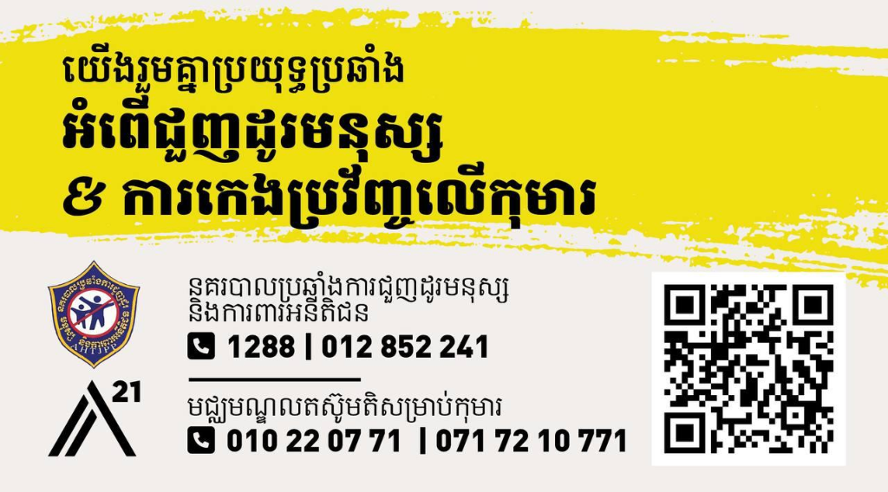

សុវត្ថិភាពឌីជីថល និងការទប់ស្កាត់ OCSEA នៅកម្ពុជា Digital Safety & Preventing OCSEA in Cambodia
ស្វែងយល់ពីហានិភ័យនៃការកេងប្រវ័ញ្ច និងការរំលោភបំពានផ្លូវភេទលើកុមារតាមប្រព័ន្ធអនឡាញ (Online Child Sexual Exploitation and Abuse) និងបំពាក់បំប៉នវិធីសាស្ត្រការពារ ឆ្លើយតប និងស្វែងរកជំនួយជាក់ស្តែង។ Understanding the risks of Online Child Sexual Exploitation and Abuse (OCSEA), and equipping participants with actionable digital safety safeguards, response protocols, and verified support helplines in Cambodia.

ក្រោយបទបង្ហាញនេះ អ្នកនឹងអាច… What You Will Take Away Today
បំពាក់បំប៉នសមត្ថភាពស្នូលចំនួន ៤ ដើម្បីក្លាយជាខែលការពារខ្លួនឯង ក្រុមគ្រួសារ និងសិស្សានុសិស្សក្នុងយុគសម័យឌីជីថល៖ 4 core practical capabilities to safeguard yourself, youth, and communities across Cambodia:
បែងចែក OCSEA ដាច់ពី CybercrimeDistinguish OCSEA from Cybercrime
• មិនច្រឡំរវាងការ Hack គណនី/Scam ជាមួយការកេងប្រវ័ញ្ចផ្លូវភេទលើកុមារ។• Differentiate financial hacking/scams from severe crimes violating child bodily integrity.
• យល់ច្បាស់ពីនិយមន័យកុមារ (ក្រោម ១៨ ឆ្នាំ) តាមច្បាប់ជាតិ និងអន្តរជាតិ។• Understand legal definitions of children (under 18) under Cambodian & international law.
ស្គាល់ ៦ ប្រភេទ & សញ្ញាព្រមានRecognize 6 Types & Warning Signs
• ចំណាំបាន Grooming, CSAM, Live-streaming, Sextortion, Lures & AI Deepfakes។• Spot grooming, CSAM, live-streaming, sextortion, material lures & AI nudify tools.
• ចាប់អារម្មណ៍លើសញ្ញាផ្លាស់ប្តូរអាកប្បកិរិយារបស់កុមារទាន់ពេលវេលា។• Detect behavioral warning signs early without aggressive device confiscation.
ចេះកំណត់ Privacy & SecurityMaster Privacy & 2FA Hardening
• អនុវត្ត 2-Step Verification លើ Telegram, Facebook, TikTok។• Implement 2-Step Verification on Telegram, Facebook, and TikTok.
• កំណត់ Privacy: Nobody, My Contacts ដើម្បីកាត់បន្ថយការទាក់ទងពីជនចម្លែក។• Lock down phone numbers, groups, and call privacy to block unknown predators.
អនុវត្ត ៤ ជំហាន & ស្គាល់ HotlineExecute 4 Steps & Contact Helplines
• ចងចាំរូបមន្ត៖ បញ្ឈប់ (Stop) · រក្សាទុក (Record) · រាយការណ៍ (Report) · គាំទ្រ (Support)។• Apply Stop, Record, Report, and Support without victim-blaming.
• ស្គាល់លេខទាន់ហេតុការណ៍ AHTJPD (1288), A21 (010 220 771), APLE, Child Helpline (1280)។• Connect directly to official Cambodian police & NGO hotlines (1288, 010 220 771, 1280).
តើ OCSEA ជាអ្វី? (Online Child Sexual Exploitation & Abuse) What Exactly is OCSEA?
OCSEA មកពីពាក្យពេញថា Online Child Sexual Exploitation and Abuse (ការកេងប្រវ័ញ្ច និងការរំលោភបំពានផ្លូវភេទលើកុមារតាមប្រព័ន្ធអនឡាញ)៖ OCSEA stands for Online Child Sexual Exploitation and Abuse — broken down into 5 critical legal components:
OCSEA ខុសពីបញ្ហាឌីជីថលទូទៅយ៉ាងដូចម្តេច? How Does OCSEA Differ from General Cybercrime?
ការយល់ច្រឡំថា OCSEA ដូចគ្នានឹងការ Hack គណនី ឬ Scam លុយ ធ្វើឱ្យយើងដោះស្រាយខុសទិសដៅ៖ Treating OCSEA as just "IT hacking" or "financial scams" causes wrong interventions. Clear distinction:
ការលួចគណនី · Phishing · Scam លុយAccount Takeover · Phishing · Financial Scams
• គោលដៅ៖ ប៉ះពាល់លើទ្រព្យសម្បត្តិ គណនីធនាគារ ទិន្នន័យឯកជន ឬឧបករណ៍បច្ចេកវិទ្យា។• Target: Financial assets, bank credentials, device hardware, or business data.
• ជនរងគ្រោះ៖ អាចជាមនុស្សពេញវ័យ អាជីវកម្ម ឬស្ថាប័នទូទៅ។• Victims: Adults, enterprises, financial institutions, or general public.
• ដំណោះស្រាយ៖ កំណត់លេខសម្ងាត់រឹងមាំ, ប្តូរ Password, Format ម៉ាស៊ីន, ដំឡើង Antivirus។• Remedy: Reset passwords, enable 2FA, format devices, contact IT support.
ការកេងប្រវ័ញ្ច & រំលោភបំពានផ្លូវភេទលើកុមារChild Sexual Exploitation & Abuse
• គោលដៅ៖ បំពានលើរាងកាយ ផ្លូវចិត្ត សេចក្តីថ្លៃថ្នូរ និងសុវត្ថិភាពអាយុជីវិតរបស់កុមារ (ក្រោម ១៨ ឆ្នាំ)។• Target: Bodily integrity, psychological well-being, and dignity of minors under 18.
• ផលវិបាក៖ បង្កការឈឺចាប់ផ្លូវចិត្តយូរអង្វែង ភាពភ័យខ្លាច ការបាក់មុខ និងហានិភ័យធ្វើបាបខ្លួនឯង។• Impact: Severe trauma, suicidal ideation, lifelong stigma, and acute safety danger.
• ដំណោះស្រាយ៖ មិនមែនត្រឹមប្តូរ Password ទេ គឺត្រូវការការសង្គ្រោះផ្លូវចិត្ត និងអន្តរាគមន៍ច្បាប់ជាបន្ទាន់!• Remedy: Not just IT fixes — requires immediate trauma counseling & legal police rescue!
ការបោកបញ្ឆោតកុមារតាមអនឡាញ (Online Grooming) Online Grooming
ដំណើរការបង្កើតទំនុកចិត្ត ឬទំនាក់ទំនងស្និទ្ធស្នាលជាមួយកុមារជាជំហានៗ ដើម្បីត្រួសត្រាយផ្លូវឆ្ពោះទៅរកការកេងប្រវ័ញ្ចផ្លូវភេទ៖ The deliberate, gradual process of building emotional trust with a child to facilitate subsequent sexual exploitation:
៣ ដំណាក់កាលនៃ Grooming3 Typical Stages of Grooming
១. ចងមេត្រីភាព៖ សរសើររូបសម្រស់ យកចិត្តទុកដាក់ ចាក់ចុចរឿងគ្រួសារ ឬលេងហ្គេមជាមួយ (Roblox, Free Fire, MLBB)។1. Befriending: Flattery, fake empathy, gaming together in Roblox/MLBB, active listening to family issues.
២. ញែកកុមារចេញ៖ បបួលទៅ Chat ជាឯកជន (Telegram Secret Chat)៖ «កុំប្រាប់ម៉ាក់ប៉ា គាត់មិនយល់ពីយើងទេ»។2. Isolating: Moving to encrypted chats (Telegram secret chat): "Keep this between us; adults don't get you."
៣. បង្ខំទាររូបភាព៖ ពេលកុមារទុកចិត្ត ចាប់ផ្តើមសុំរូបភាពស្រាត ឬសកម្មភាពផ្លូវភេទបន្តិចម្តងៗ។3. Soliciting: Once emotional dependency is formed, escalating to requests for nude imagery or sexual acts.
អ្នកណាខ្លះអាចជាអ្នកប្រព្រឹត្ត?Who Are the Groomers?
• មនុស្សចម្លែកក្លែងអត្តសញ្ញាណ៖ ដាក់រូបក្មេងវ័យស្របាលគ្នា ឬរូបស្រស់ស្អាតលើ Facebook/TikTok ដើម្បីទាក់ទាញកុមារ។• Fake Online Peers: Posing as fellow teenagers with attractive avatars on TikTok, Facebook, or Instagram.
• មនុស្សស្គាល់មុខក្នុងជីវិតពិត៖ អាចជាអ្នកជិតខាង មិត្តភក្តិ ឬមនុស្សធំដែលកុមារធ្លាប់ស្គាល់ តែឆ្លៀតឱកាសតាមអនឡាញ។• Real-Life Acquaintances: Neighbors, relatives, or community members exploiting digital familiarity.
• គោលបំណងចម្បង៖ ស្វែងរកចំណុចខ្សោយ និងភាពឯកោរបស់កុមារដើម្បីគ្រប់គ្រង។• Core Tactic: Exploiting emotional loneliness to build artificial intimacy and control.
សម្ភារៈរំលោភបំពានផ្លូវភេទលើកុមារ (CSAM) Child Sexual Abuse Material (CSAM)
CSAM = Child Sexual Abuse Material សំដៅលើរូបភាព វីដេអូ ឬឯកសារឌីជីថលដែលបង្ហាញពីការរំលោភបំពានផ្លូវភេទលើកុមារ៖ CSAM refers to digital images, videos, or media capturing child sexual abuse or explicit exploitation:
គ្មានពាក្យថា «ការព្រមព្រៀង» ពីកុមារឡើយMinors Cannot Legally Consent
ពិភពលោកឈប់ប្រើពាក្យថា «Child Pornography» ពីព្រោះកុមារមិនអាចផ្តល់ការយល់ព្រមតាមផ្លូវច្បាប់បានឡើយ។International bodies have retired "child pornography" because pornography implies legal consent between adults.
រាល់រូបភាពអាសអាភាសដែលមានវត្តមានកុមារ គឺជាភស្តុតាងនៃឧក្រិដ្ឋកម្ម និងការរំលោភបំពានផ្លូវភេទទាំងស្រុង។Any explicit media depicting a child is direct evidence of a violent penal crime and ongoing abuse.
ដាច់ខាតកុំ Share · កុំ Forward · កុំរក្សាទុកZero Tolerance: Never Share or Forward
ការផលិត ទាញយក រក្សាទុក ឬចែកចាយបន្ត (ទោះបី Share ដើម្បីប្រាប់តៗគ្នាក៏ដោយ) គឺជាបទល្មើសព្រហ្មទណ្ឌធ្ងន់ធ្ងរ។Downloading, possessing, or forwarding CSAM (even to alert peers) is a serious penal offense under Cambodian law.
រាល់ពេលដែលរូបភាពត្រូវបញ្ជូនបន្ត ជនរងគ្រោះទទួលរងការឈឺចាប់ និងការរំលោភបំពានម្តងទៀតជាអចិន្ត្រៃយ៍។Every re-share revictimizes the child indefinitely across digital ecosystems.
ការផ្សាយផ្ទាល់ការរំលោភបំពាន (Live-streaming of Abuse) Live-Streaming of Child Abuse
ការប្រើប្រាស់បច្ចេកវិទ្យាវីដេអូខល (Video Call) ឬការ Live ផ្ទាល់ ដើម្បីឱ្យអ្នកដទៃទស្សនា ឬបញ្ជាឱ្យមានការរំលោភបំពានក្នុងពេលជាក់ស្តែង៖ Exploiting video calls or private webcams where viewers or overseas controllers pay to direct sexual abuse in real time:
ការបញ្ជាពីចម្ងាយ & ការបង់ប្រាក់Remote Direction & Digital Payments
• ជនល្មើស (ច្រើនតែនៅក្រៅប្រទេស) ផ្ទេរប្រាក់ដើម្បីបញ្ជាឱ្យមានការរំលោភបំពានកុមារនៅចំពោះមុខកាមេរ៉ា។• Remote predators (often overseas) send digital wire payments directing on-camera abuse.
• កុមារអាចត្រូវបានបង្ខិតបង្ខំដោយមនុស្សជិតស្និទ្ធ ឬដោយមេខ្យល់ជួញដូរមនុស្ស។• Minors may be coerced by family members, trusted guardians, or human trafficking rings.
គ្រោះថ្នាក់ជាក់ស្តែងចំពោះរាងកាយAcute Immediate Physical Peril
• មិនមែនគ្រាន់តែជារូបភាពចាស់ទេ — គឺកុមារកំពុងស្ថិតក្នុងគ្រោះថ្នាក់លើរាងកាយនៅពេលនោះផ្ទាល់!• Unlike archived media, live-streaming represents immediate, active physical danger to the child.
• ត្រូវការការសហការសង្គ្រោះបន្ទាន់រវាងសមត្ថកិច្ច AHTJPD, អង្គការ A21 និង APLE Cambodia។• Demands rapid multi-agency intervention (AHTJPD Police, A21, APLE) to locate and rescue victims.
ការគំរាមកំហែងជំរិតទារប្រាក់/ផ្លូវភេទ (Sextortion) Sextortion (Sexual Blackmail)
ការគំរាមបង្ហោះរូបភាពស្រាត ឬរូបឯកជន ប្រសិនបើកុមារមិនព្រមផ្ញើប្រាក់ ឬមិនព្រមធ្វើតាមការទាមទារ៖ Threatening to expose private or explicit photos unless the minor pays money or complies with sexual demands:
Financial & Coercive SextortionFinancial vs Coercive Blackmail
១. ជំរិតទារលុយ (Financial): បង្ខំឱ្យកុមារវេរលុយតាម ABA, Wing ឬកាតទូរស័ព្ទ។1. Financial Sextortion: Demanding bank transfers via ABA, Wing, or mobile phone top-up cards.
២. ជំរិតទាររូបបន្ថែម (Coercive): បង្ខំឱ្យផ្ញើរូបកាន់តែអាសអាភាសថែម ឬបង្ខំឱ្យជួបផ្ទាល់។2. Coercive Sextortion: Demanding escalating explicit content or coercing in-person physical meetings.
«ការបង់ប្រាក់មិនដែលបញ្ចប់ការគំរាមឡើយ»"Paying Money NEVER Stops Blackmail"
• ជនល្មើសនឹងមិនលុបរូបទេ — ផ្ទុយទៅវិញ ពួកគេនឹងទារប្រាក់កាន់តែច្រើនឡើងៗ។• Extortionists never delete imagery; compliance only emboldens them to demand higher sums.
• កុមារមិនមែនជាអ្នកខុសឡើយ! ត្រូវបញ្ឈប់ការទាក់ទង រក្សាភស្តុតាង និងប្រាប់មនុស្សធំជាបន្ទាន់។• The victim is never to blame. Cut off contact, screenshot evidence, and report immediately.
ការកេងប្រវ័ញ្ចដោយប្រាក់ ឬអំណោយ (Material Exploitation) Financial & Material Exploitation
ការប្រើប្រាស់លុយ អំណោយ សម្ភារៈ ឬលាភសក្ការៈ ដើម្បីបញ្ចុះបញ្ចូល ឬទិញទឹកចិត្តកុមារឱ្យព្រមផ្ញើរូបភាព ឬបំពេញតម្រូវការផ្លូវភេទ៖ Offering money, gifts, in-game currency, or luxury goods to persuade minors to provide explicit imagery or perform sexual acts:
នុយឌីជីថលទាក់ទាញក្មេងៗDigital Lures Targeting Minors
• Top-up ហ្គេម៖ បញ្ចូលលុយហ្គេម (Robux ក្នុង Roblox, Diamonds ក្នុង Free Fire, MLBB)។• In-Game Currency: Gifting Robux in Roblox, Diamonds in Free Fire, skin packages in MLBB.
• ទិញទូរស័ព្ទ / កាតលុយ៖ សន្យាទិញ iPhone ថ្មី ឬផ្ញើលុយចាយប្រចាំថ្ងៃ។• Hardware & Cash: Promising new iPhones, buying airtime cards, or sending daily allowance.
• សន្យាឱកាសការងារ៖ បោកថានឹងឱ្យធ្វើតារាម៉ូដែល តារាសម្តែង ឬ Influencer។• Fake Career Opportunities: False promises of modeling contracts, talent agencies, or influencer status.
កុមារទទួលអំណោយ មិនមែនជាការព្រមព្រៀងឡើយ!Accepting Gifts Does NOT Equal Consent!
• តាមច្បាប់កម្ពុជា ការផ្តល់ប្រាក់ ឬអំណោយទៅកុមារដើម្បីទារសេវាផ្លូវភេទ គឺជាបទល្មើសជួញដូរផ្លូវភេទ និងកេងប្រវ័ញ្ចលើកុមារ។• Providing gifts or funds to minors in exchange for sexual acts constitutes child sexual exploitation and human trafficking.
• ទោះបីជាកុមារព្រមទទួល ក៏ជនល្មើសនៅតែត្រូវទទួលទោសព្រហ្មទណ្ឌពេញលេញ។• The perpetrator remains 100% criminally liable regardless of the child's apparent agreement.
រូបភាពក្លែងក្លាយដោយបញ្ញាសិប្បនិម្មិត (AI Deepfakes) AI Deepfakes & GenAI Abuse
ការព្រមានរបស់ UNICEF (២០២៦)៖ ការប្រើប្រាស់បច្ចេកវិទ្យា Generative AI ឬ Telegram Bots ដើម្បីកាត់តរូបភាពធម្មតារបស់សិស្សឱ្យទៅជារូបអាក្រាតកាយក្លែងក្លាយក្នុងពេលប៉ុន្មានវិនាទី៖ UNICEF 2026 Warning: Using Generative AI tools and automated Telegram bots to strip or alter innocent youth photos into synthetic nude deepfakes in seconds:
AI Nudify Tools & Telegram BotsAI "Nudify" Bots Targeting Students
• ជនល្មើសគ្រាន់តែយករូបថតធម្មតា (រូបពាក់ឯកសណ្ឋានសាលា រូបដើរលេង) មកកែច្នៃជារូបស្រាតក្លែងក្លាយ។• Predators weaponize everyday school uniform photos or casual social snapshots into fake explicit nudes.
• រូបក្លែងក្លាយត្រូវបានយកទៅគំរាមទារលុយ ឬបង្ហោះបង្ខូចកេរ្តិ៍ឈ្មោះក្នុងសាលារៀន។• Synthetic deepfakes are used for severe peer bullying, blackmail, and school-wide humiliation.
«ទោះជារូបក្លែងក្លាយ តែការឈឺចាប់គឺពិតប្រាកដ!»"Fake Images — 100% Real Trauma!"
• ជនរងគ្រោះរងការរើសអើង ការអាម៉ាស់ និងការបាក់ទឹកចិត្តយ៉ាងធ្ងន់ធ្ងរដូចរូបភាពពិត។• Victims experience intense emotional distress, depression, and social ostracization.
• ឧបករណ៍ Take It Down (NCMEC) អាចជួយលុបរូបភាព និងការពារកុំឱ្យមានការចែកចាយបន្ត។• Minors can submit hashes to Take It Down (NCMEC) to preemptively block dissemination.
សញ្ញាព្រមានអំពីអាកប្បកិរិយារបស់កុមារ Behavioral Warning Signs in Youth
សញ្ញាព្រមានមិនមែនជាភស្តុតាងនៃការប្រព្រឹត្តទេ តែជាសញ្ញាបង្ហាញថាកុមារកំពុងត្រូវការជំនួយ និងការយកចិត្តទុកដាក់៖ Warning signs are behavioral indicators, not conclusive proof. How to identify emotional distress without toxic intrusion:
ការផ្លាស់ប្តូរទម្លាប់ភ្លាមៗSudden Shifts in Routine
• លាក់បាំងអេក្រង់៖ បិទទូរស័ព្ទភ្លាមៗពេលមានមនុស្សដើរកាត់ ឬគេងចុចទូរស័ព្ទយប់ជ្រៅស្ងាត់ៗ។• Screen Concealment: Panicking when guardians walk by, switching tabs rapidly, late-night secretive usage.
• អារម្មណ៍ប្រែប្រួលខ្លាំង៖ បង្ហាញភាពភ័យខ្លាច ឆេវឆាវ ឬយំក្រោយពេលពិនិត្យសារ Chat។• Emotional Volatility: Sudden withdrawal, extreme anxiety after notifications, tearfulness, or sudden panic.
• មានលុយ ឬសម្ភារៈចម្លែក៖ មានកាតទូរស័ព្ទ កាដូ ឬទូរស័ព្ទថ្មីដោយគ្មានប្រភពច្បាស់លាស់។• Unexplained Gifts: Possession of expensive accessories, gaming perks, or new mobile phones.
កុំស្តីបន្ទោស · បង្កើតកន្លែងសុវត្ថិភាពListen Calmly · Do NOT Punish
• កុំដកហូតទូរស័ព្ទភ្លាមៗ៖ ការដកទូរស័ព្ទធ្វើឱ្យកុមារកាន់តែឯកោ និងលាក់បាំងបញ្ហាកាន់តែជ្រៅ។• Avoid Angry Confiscation: Seizing phones cuts the child off from help and destroys future disclosure.
• សួរសំណួរដោយក្តីស្រឡាញ់៖ «តើមានរឿងអ្វីធ្វើឱ្យកូនមិនស្រួលចិត្តទេ? ប៉ាម៉ាក់នៅទីនេះដើម្បីជួយកូនជានិច្ច»។• Lead with Safe Empathy: "Is someone making you feel uncomfortable online? I'm here to support you."
ករណីជាក់ស្តែង៖ ការបង្ក្រាបបណ្តាញ Telegram CSAM Real Case: Telegram CSAM Network Crackdown
Fresh News (២២ កុម្ភៈ ២០២៤)៖ ស្ត្រីម្នាក់ត្រូវបានចាប់ខ្លួន និងចោទប្រកាន់ ក្រោយការស៊ើបអង្កេតរួមគ្នារវាងសមត្ថកិច្ច និងអង្គការ APLE Cambodia៖ Fresh News (22 Feb 2024): Arrest and formal charging of a suspect following an intensive joint investigation initiated by APLE Cambodia:
៣៤ ឆានែល & ឯកសារជាង ១៩,០០០34 Channels & 19,000+ Media Files
• ជនសង្ស័យបានគ្រប់គ្រង ៣៤ Telegram channels/groups ដែលមានសមាជិកចន្លោះពី ៣,០០០ ដល់ ១៧,០០០ នាក់។• Suspect operated 34 Telegram groups with 3,000 to 17,000 active subscribers each.
• រកឃើញឯកសារផ្លូវភេទជាង ១៩,០០០ (រួមមានទាំងមនុស្សពេញវ័យ និងកុមារ) ដែលត្រូវបានចែកចាយដើម្បីរកប្រាក់ចំណេញ។• Over 19,000 sexually explicit files cataloged, monetized through paid VIP subscriptions.
មិនចាំបាច់ដល់ Dark Web ទេPredators Operate on Mainstream Apps
• បទល្មើសមិនមែនកើតឡើងតែក្នុងទីងងឹតដែលគ្មានអ្នកស្គាល់ទេ — គឺកើតឡើងលើ Telegram ដែលយើងប្រើរាល់ថ្ងៃ!• OCSEA does not require dark web lore; it happens on everyday mobile consumer apps like Telegram.
• សមត្ថកិច្ចកម្ពុជាមានសមត្ថភាពស៊ើបអង្កេតបច្ចេកវិទ្យា និងតាមដានជនល្មើសទោះជាប្រើគណនីក្លែងក្លាយក៏ដោយ។• Cambodian police have technical forensics tracking offenders despite anonymous handles.
ការជ្រើសរើសការងារក្លែងក្លាយ & Scam Compounds Job Scams & Compound Risks: Understanding the Link
របាយការណ៍ Amnesty International (២០២៥–២០២៦) ស្តីពីហានិភ័យការជួញដូរមនុស្ស និងការកេងប្រវ័ញ្ចតាមបរិវេណបោកប្រាស់៖ Amnesty International reports (2025–2026) regarding human trafficking, scam compounds, and adjacent risks:
ការផ្តល់ការងារក្លែងក្លាយតាមអនឡាញDeceptive Digital Recruitment
• សន្យាប្រាក់ខែខ្ពស់ខុសធម្មតា មិនមានព័ត៌មានក្រុមហ៊ុនច្បាស់លាស់ ឬបង្ខំឱ្យធ្វើដំណើរជាសម្ងាត់។• Unusually high salary lures with no formal corporate registration, coercing fast travel.
• អាចធ្លាក់ចូលក្នុងអំពើជួញដូរមនុស្ស ការរឹតត្បិតសេរីភាព និងការបង្ខំឱ្យធ្វើការបោកប្រាស់។• Risks falling into human trafficking, illegal confinement, and forced cyber-scam operations.
រក្សាការបែងចែកច្បាស់លាស់Maintain Rigorous Legal Categorization
• មិនត្រូវសន្និដ្ឋានថា Scam Compound ទាំងអស់សុទ្ធតែជា OCSEA ឡើយ លុះត្រាតែមានភស្តុតាងបញ្ជាក់ថាកុមារត្រូវបានកេងប្រវ័ញ្ចផ្លូវភេទ។• Do not conflate adult labor trafficking with OCSEA unless evidence confirms child sexual abuse.
• ប្រសិនបើមានកុមារពាក់ព័ន្ធ ត្រូវបញ្ជូនបន្តជាបន្ទាន់ទៅកាន់អង្គការ A21 និងសមត្ថកិច្ចជំនាញ AHTJPD។• If minors are detected, trigger multi-agency referral directly to A21 CAC and AHTJPD Police.
កុំផ្ដោតតែលើ Dark Web៖ ហានិភ័យកើតលើ App រាល់ថ្ងៃ! Beyond the Dark Web: Risks Happen on Everyday Apps
អ្វីដែលសំខាន់ជាងការស្វែងរកទីតាំងអាថ៌កំបាំង គឺការយល់ពីរបៀបដែលជនល្មើសទាក់ទង និងកេងប្រវ័ញ្ចលើកម្មវិធីដែលកុមារកំពុងប្រើ៖ Child protection begins where youth actually spend their time online, not hunting obscure dark web myths:
បណ្តាញសង្គម ហ្គេម & កម្មវិធីជជែកSocial Media, Games & Chat Apps
• Facebook, TikTok, Telegram, Instagram៖ ការទាក់ទងអាចចាប់ផ្តើមក្នុង comment, direct message, ឬ group chats។• Facebook, TikTok, Telegram, Instagram: Solicitation begins in public comments, DMs, or mutual groups.
• ហ្គេមអនឡាញ (Roblox, Free Fire, MLBB)៖ ប្រើ Voice chat ឬ Game chat ដើម្បីបង្កើតទំនុកចិត្តជាមួយកុមារ។• Online Games (Roblox, Free Fire, MLBB): In-game text and voice chats used for initial rapport.
បរិបទបន្ថែម មិនមែនចំណុចផ្តោតសំខាន់Contextual Background, Not Core Focus
• Dark Web មានពិតប្រាកដសម្រាប់បណ្តាញឧក្រិដ្ឋកម្មធំៗ តែសម្រាប់អ្នកចូលរួមទូទៅ មិនចាំបាច់ចូលទៅស្វែងរកវាឡើយ។• The dark web hosts organized crime syndicates, but everyday Cambodians do not need to access it.
• ករណីជាក់ស្តែងភាគច្រើននៅកម្ពុជា កើតឡើងលើ Telegram និង Messenger ធម្មតាប៉ុណ្ណោះ។• The overwhelming majority of Cambodian cases occur on Telegram and Messenger.
បញ្ហាប្រឈមក្នុងការរកឃើញ & រាយការណ៍នៅកម្ពុជា Challenges in Detection & Reporting in Cambodia
ឧបសគ្គផ្លូវចិត្ត និងសង្គមដែលរារាំងមិនឱ្យកុមារ និងគ្រួសារហ៊ានស្វែងរកជំនួយទាន់ពេលវេលា៖ Cultural and psychological barriers preventing children and families from seeking timely help:
ភាពអាម៉ាស់ · ការបន្ទោស · ភាពភ័យខ្លាចShame · Victim-Blaming · Fear
• ភាពអាម៉ាស់ (Shame & Stigma)៖ ខ្លាចបាក់មុខ ខូចកិត្តិយសគ្រួសារ ខ្លាចមិត្តភក្តិសើចចំអក។• Stigma & Disgrace: Intense fear of family disgrace, community gossip, and social isolation.
• ការបន្ទោសជនរងគ្រោះ (Victim-Blaming)៖ «មកពីឯងល្ងង់ផ្ញើរូបឱ្យគេ!» «មកពីស្លៀកពាក់មិនសមរម្យ!»។• Victim-Blaming: "Why were you foolish enough to send it?" "It's your fault for trusting them!"
• ការភ័យខ្លាចទណ្ឌកម្ម៖ ខ្លាចឪពុកម្តាយវាយ ដកហូតទូរស័ព្ទ ឬបណ្តេញចេញពីផ្ទះ។• Fear of Punishment: Fear that parents will beat them, ban internet access, or expel them from school.
«ជនរងគ្រោះគ្មានកំហុសឡើយ!»"The Victim is NEVER at Fault!"
• កុមារត្រូវបានបោកបញ្ឆោត ឬគំរាមកំហែងដោយជនល្មើសដែលមានចេតនាអាក្រក់។• Minors are systematically manipulated by sophisticated, predatory adults.
• អ្នកគំរាម និងអ្នកជំរិតទារប្រាក់ទើបជាឧក្រិដ្ឋជនពិតប្រាកដ!• The blackmailer and predator are 100% criminally responsible.
• ការបន្ទោសជនរងគ្រោះ គឺជួយបិទបាំងឱ្យជនល្មើសរួចខ្លួន និងបន្តធ្វើបាបក្មេងដទៃទៀត។• Victim-blaming only shields the criminal, enabling them to exploit more children.
វិធានការការពារជាក់ស្តែង (Digital Safety Checklist) Actionable Digital Safety Checklist
ការកំណត់ជាក់ស្តែងលើទូរស័ព្ទដៃ និងគណនីបណ្តាញសង្គម ដើម្បីការពារខ្លួនពីការជ្រៀតចូល៖ Concrete smartphone and app privacy hardening to prevent predator access:
បើក 2FA លើគ្រប់គណនីEnable 2FA on All Accounts
• Telegram៖ ចូល Settings > Privacy and Security > Two-Step Verification (កំណត់ Cloud Password)។• Telegram: Settings > Privacy & Security > Two-Step Verification (Set Cloud Password).
• Facebook & TikTok៖ បើក Two-Factor Authentication តាម Authenticator App ឬ SMS។• Facebook & TikTok: Turn on 2FA via authenticator app or phone verification.
• ដាច់ខាតកុំប្រាប់លេខកូដ OTP ទៅកាន់អ្នកដទៃ ទោះជាគេអះអាងថាជាមិត្តភក្តិក៏ដោយ!• Never share OTP verification codes with anyone, even friends claiming contests.
បិទការមើលឃើញពីមនុស្សចម្លែកLock Down Visibility to Strangers
• Phone Number៖ កំណត់ Nobody (Telegram/Facebook) ដើម្បីកុំឱ្យគេ search រកឃើញ។• Phone Number: Set to "Nobody" (Telegram/Facebook) to prevent phone-based tracking.
• Groups & Channels៖ កំណត់ My Contacts (ការពារកុំឱ្យគេទាញចូលគ្រុបអាសអាភាស)។• Groups & Channels: Restrict to "My Contacts" to block random adds to illicit groups.
• Calls៖ កំណត់ My Contacts (ទប់ស្កាត់ការខលបៀតបៀនពីជនចម្លែក)។• Calls: Limit to "My Contacts" to prevent unsolicited harassment calls.
រូបមន្ត ៤ ជំហាន៖ STOP · RECORD · REPORT · SUPPORT The 4-Step Action Framework
អ្វីដែលត្រូវធ្វើភ្លាមៗនៅពេលអ្នក ឬកុមារជួបប្រទះការគំរាម ឬការបៀតបៀនតាមអនឡាញ៖ Immediate standard operating procedure when you or a minor face online harassment or blackmail:
STOP
• កុំតបតសារ• Cease messaging
• កុំផ្ញើលុយដាច់ខាត• Do NOT pay money
• Block គណនីជនល្មើស• Block the perpetrator
RECORD
• ថត Screenshot សារ• Screenshot all chats
• កត់ Username, Link• Note @handle & URLs
• រក្សាទុកកុងធនាគារ• Save bank/wire accounts
REPORT
• Report ក្នុង App• Report in-app profile
• ទាក់ទង A21 / APLE• Contact A21 or APLE
• ប្តឹងនគរបាល 1288• Police Hotline 1288
SUPPORT
• ស្តាប់ដោយក្តីមេត្តា• Listen with empathy
• កុំស្តីបន្ទោសកុមារ• Never blame the child
• ហៅ 1280 សុំការប្រឹក្សា• Call 1280 counseling
បណ្តាញសេវាជំនួយ និងលេខទូរស័ព្ទទាន់ហេតុការណ៍ផ្លូវការ Verified Help Resources & Emergency Hotlines
យុទ្ធនាការផ្លូវការរួមគ្នា និងបណ្តាញជំនួយសុវត្ថិភាពឌីជីថលដែលបានផ្ទៀងផ្ទាត់នៅកម្ពុជា (sophat.space/help)៖ Official joint national campaign & verified digital safety resources in Cambodia (sophat.space/help):

APLE & Child HelplineAPLE & Child Helpline
• APLE Cambodia: Hotline 092 311 511 (ស៊ើបអង្កេត CSAM & គាំទ្រច្បាប់)• APLE Cambodia: 092 311 511 (CSAM investigation & legal aid)
• Child Helpline: 1280 (ឥតគិតថ្លៃ ២៤/៧ ទូទាំង ២៥ ខេត្ត-ក្រុង)• Child Helpline: 1280 (Free 24/7 counseling nationwide)
• Take It Down: takeitdown.ncmec.org (ដករូបភាពអាក្រាតចេញពីអនឡាញ)• Take It Down: takeitdown.ncmec.org (NCMEC removal tool)
Anti-Cybercrime & CamCERTAnti-Cybercrime & CamCERT
• នាយកដ្ឋានប្រឆាំងបទល្មើសបច្ចេកវិទ្យា៖ hotline.police.gov.kh | App Kapea Scams• Anti-Cybercrime Dept: hotline.police.gov.kh | App Kapea Scams
• CamCERT (MPTC)៖ +855 23 722 391 (ឆ្លើយតបបន្ទាន់បញ្ហាសន្តិសុខសាយប័រ)• CamCERT (MPTC): +855 23 722 391 (Cyber Incident Response)
• អ៊ីមែល CamCERT៖ incident@camcert.gov.kh• CamCERT Email: incident@camcert.gov.kh
CWCC & Sophat.SpaceCWCC & Sophat.Space
• CWCC (វិបត្តិស្ត្រី និងកុមារី)៖ Hotline 012 828 732 | 023 993 429• CWCC (Women & Girls Crisis): 012 828 732 | 023 993 429
• Stop Online Harm / Karpeer៖ Telegram @KarpeerHelpLine• Stop Online Harm / Karpeer: Telegram @KarpeerHelpLine
• Sophat.Space Help៖ sophat.space/help (មជ្ឈមណ្ឌលជំនួយឌីជីថលខ្មែរ)• Sophat.Space Help: sophat.space/help (Khmer Digital Safety Hub)
ពីការយល់ដឹង ទៅជាសកម្មភាពជាក់ស្តែងរបស់ខេត្ត From Awareness to Action: Provincial Leadership
សម្រាប់ថ្នាក់ដឹកនាំខេត្ត មន្ត្រីរាជការ អ្នកមុខមាត់ អ្នកស្រាវជ្រាវ និងអ្នកធ្វើការជាមួយកុមារ៖ For provincial governors, municipal officers, civil society, researchers, and community leaders:
កំណត់ Focal Point & ផ្លូវបញ្ជូនករណីDesignate Focal Points & Referral Paths
• កំណត់ចំណុចទំនាក់ទំនងរវាងរដ្ឋបាលខេត្ត សមត្ថកិច្ច សង្គមកិច្ច អប់រំ និងសុខាភិបាល។• Establish seamless multi-agency contact points across police, social affairs, education, and health.
• ធានាថាមានអ្នកទទួលករណី អ្នកបញ្ជូនបន្ត និងការតាមដានច្បាស់លាស់។• Ensure clear case managers, safe referral mechanisms, and systematic follow-up.
ដាក់ការពារកុមារក្នុងផែនការខេត្តEmbed Child Protection in Local Budgets
• ពិចារណាថវិកាសម្រាប់អប់រំសុវត្ថិភាពអនឡាញ និងការបណ្ដុះបណ្ដាលជាប្រចាំ។• Allocate local resources for digital safety training in schools and community centers.
• ភ្ជាប់សកម្មភាពទៅនឹង ផែនការជាតិ ២០២៥–២០៣០ ស្ដីពីការបង្ការ និងឆ្លើយតបនឹងអំពើហិង្សាលើកុមារ។• Align provincial efforts with Cambodia's National Plan 2025–2030 to End Violence Against Children.
ប្រើឥទ្ធិពលដោយមិនធ្វើឱ្យកុមាររងគ្រោះAdvocate Without Revictimizing
• កុំបង្ហោះឈ្មោះ រូបភាព ឬព័ត៌មានដែលអាចកំណត់អត្តសញ្ញាណកុមារ។• Never publish minor names, faces, schools, or identifying family details.
• កុំចែករំលែកសម្ភារៈរំលោភបំពាន ឬបន្ទោសជនរងគ្រោះ។ ផ្សព្វផ្សាយតែព័ត៌មានជំនួយ។• Zero sharing of abuse content; amplify verified hotline resources instead.
ទិន្នន័យមានសុវត្ថិភាព & ផ្តោតលើជនរងគ្រោះEthical Data & Trauma-Informed Care
• បែងចែករវាងព័ត៌មានបានផ្ទៀងផ្ទាត់ ការចោទប្រកាន់ និងការសន្និដ្ឋាន។• Maintain strict evidentiary standards; distinguish rumors from verified facts.
• កុំសម្ភាសកុមារដដែលៗដោយមិនចាំបាច់។ សម្របសម្រួលទៅកាន់អ្នកជំនាញ CAC/A21។• Prevent repetitive questioning; coordinate with certified Child Advocacy Centers (CAC/A21).
ប្រភពឯកសារយោង និងសារបិទបទបង្ហាញ References & Closing Key Message
ឯកសារយោងផ្លូវការជាតិ និងអន្តរជាតិដែលបានដកស្រង់ក្នុងបទបង្ហាញនេះ៖ Official national and international sources cited in this presentation:
• Fresh News (22 Feb 2024): Telegram CSAM network investigation with APLE
• UNICEF Cambodia (2025): Stories of youth staying safe online in Battambang
• Amnesty International (2025–2026): Updates on human trafficking & scam compounds
• ផែនការជាតិ ២០២៥–២០៣០: National Action Plan to End Violence Against Children
• UNICEF / MPTC (2023): Cambodian Child Online Protection Guidelines
• Disrupting Harm Cambodia: UNICEF, ECPAT, INTERPOL
«អ៊ីនធឺណិតគួរតែជាពិភពនៃការរៀនសូត្រ ការបង្កើតថ្មី និងការរីកចម្រើនរបស់កុមារ — មិនមែនជាកន្លែងកេងប្រវ័ញ្ច និងរំលោភបំពានឡើយ!» "The internet must be a world of learning, innovation, and growth for children — NOT a hunting ground for exploitation and abuse!"
រៀបចំដោយ អង្គការ A21 កម្ពុជា · បទបង្ហាញដោយ ជី សុផាត
ទាញយកស្លាយ និងឯកសារបន្ថែម៖ sophat.space ↗
Hosted by A21 Cambodia · Presented by Sophat CHY
Download deck & digital safety guides: sophat.space ↗